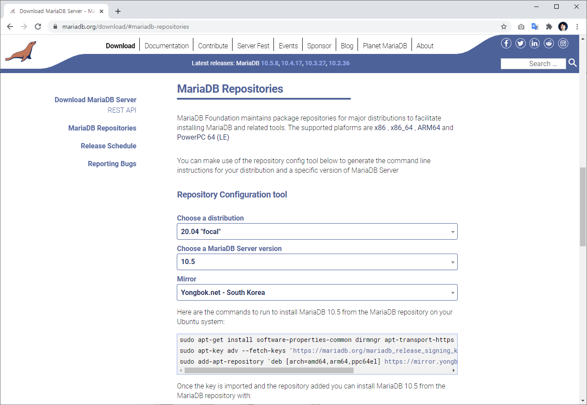

마리아DB 패키지 설치
패키지를 이용하여 MariaaDB를 설치해 보도록 합니다.
설치 여부 확인
중복 설치를 방지하기 위해서 먼저 mariadb가 설치되어 있는지 확인해 보도록 합니다.
$dpkg -l | grep mariadb
아무런 메시지가 없다면, 설치된 mariadb 패키지가 없다는 의미 입니다.
MariaDB 최신버젼
리눅스 패포판은 기본적으로 최신 버젼의 패키지를 제공하지 않습니다.
최신의 mariadb를 설치하기 위해서는 목록을 갱신해 주어야 합니다.
저장소의 목록은 https://mariadb.org/download/#mariadb-repositories 에서 확인을 할 수 있습니다.

Linux 패보판 운영체제와 설치하고자 하는 MaraiaDB 버젼을 선택합니다. 그럼 입력해야 하는 목록을 자동적으로 생성해 줍니다. 이를 실행합니다.
$ sudo apt-get install software-properties-common dirmngr apt-transport-https
$ sudo apt-key adv --fetch-keys 'https://mariadb.org/mariadb_release_signing_key.asc'
$ sudo add-apt-repository 'deb [arch=amd64,arm64,ppc64el] https://mirror.yongbok.net/mariadb/repo/10.5/ubuntu focal main'
새로운 패키지 저장소 목록을 추가했다면, 목록을 갱신합니다.
$ sudo apt update
패키지 설치
최신 버젼의 Mariadb를 설치할 수 있도록 목록을 갱신하였습니다. 다음과 같이 명령을 입력하여 mariadb를 설치합니다.
$ sudo apt install mariadb-server -y
설치가 완료 되었면 자동으로 MariaDB가 실행됩니다. 다음과 같이 프로세스를 확인해 봅니다.
hojin@hojin:~$ ps -ef | grep mysql
mysql 4815 1 0 15:32 ? 00:00:00 /usr/sbin/mariadbd
hojin 5812 2266 0 15:34 pts/0 00:00:00 grep --color=auto mysql
버젼확인하기
설치된 mariadb를 확인합니다.
hojin@hojin:~$ sudo mariadb --version
mariadb Ver 15.1 Distrib 10.3.25-MariaDB, for debian-linux-gnu (x86_64) using readline 5.2